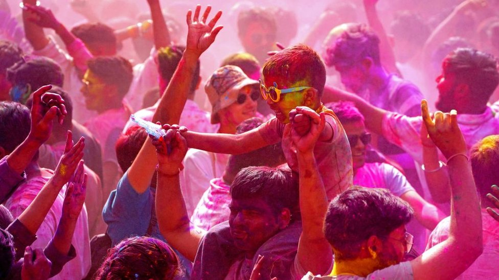

HOLI

Holi is a spring festival also known as festival of colours, and sometimes festival of love.it is an ancient Hindu religious festival which has become popular with non-Hindus in many Parts of South Asia, as well as people of other communities. Holi celebrations start with a Holika bonfire on the night before Holi where people gather,sing and dance.